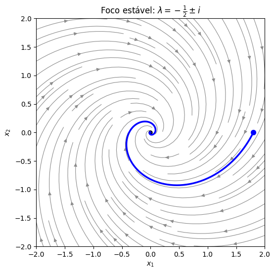
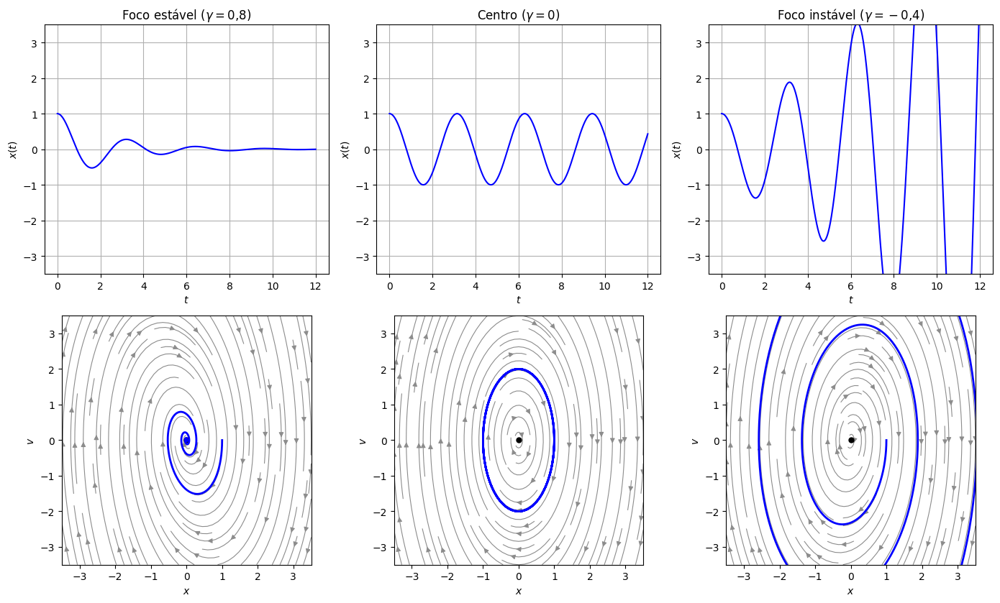

Autovalores Complexos#
Na aula de autovalores, vimos que a matriz do oscilador harmônico escrito como sistema,
tem como equação característica \(\lambda^2+\frac{\gamma}{m}\lambda+\frac{k}{m}=0\), a mesma da equação de segunda ordem. Quando o oscilador oscila (sem amortecimento ou subamortecido), essas raízes são complexas. Então, para entender oscilações escritas como sistema, precisamos lidar com autovalores complexos.
De soluções complexas para soluções reais#
Se a matriz \(A\) é real e \(\lambda=\alpha+i\beta\) (com \(\beta\neq0\)) é um autovalor, então o conjugado \(\bar\lambda=\alpha-i\beta\) também é, e os autovetores também vêm em pares conjugados: se \(\mathbf{v}=\mathbf{a}+i\mathbf{b}\) é autovetor de \(\lambda\) (com \(\mathbf{a},\mathbf{b}\) vetores reais), então \(\bar{\mathbf{v}}=\mathbf{a}-i\mathbf{b}\) é autovetor de \(\bar\lambda\).
A solução \(e^{\lambda t}\mathbf{v}\) continua valendo, só que é complexa. Usando a fórmula de Euler, \(e^{(\alpha+i\beta)t}=e^{\alpha t}(\cos\beta t+i\,\text{sen}\,\beta t)\), e separando parte real e parte imaginária:
Como \(A\) é real, a parte real e a parte imaginária de uma solução complexa são, cada uma, soluções reais (é a mesma «troca de base» que fizemos na aula de raízes complexas da segunda ordem). Então, para um sistema \(2\times2\) com autovalores \(\alpha\pm i\beta\), a solução geral real é
Na prática: calcule um autovetor \(\mathbf{v}\) (para \(\lambda=\alpha+i\beta\)), multiplique por \(e^{\lambda t}\), expanda com Euler e separe parte real e imaginária. O conjugado não traz informação nova.
Vamos usar uma função do Python para desenhar os retratos de fase.
import numpy as np
import matplotlib.pyplot as plt
import sympy as sp
from scipy.integrate import solve_ivp
def retrato(A, ax, lim=3, titulo=None, autovetores=True):
# Desenha o retrato de fase de x' = A x no quadrado [-lim, lim]^2
A = np.array(A, dtype=float)
s = np.linspace(-lim, lim, 40)
X, Y = np.meshgrid(s, s)
U = A[0, 0]*X + A[0, 1]*Y
V = A[1, 0]*X + A[1, 1]*Y
ax.streamplot(X, Y, U, V, color='0.55', density=1.1, linewidth=0.8, arrowsize=1)
if autovetores:
lam, vec = np.linalg.eig(A)
if np.all(np.abs(lam.imag) < 1e-12):
pares = list(zip(lam.real, vec.T.real))
if abs(lam[0] - lam[1]) < 1e-6:
pares = pares[:1]
for l, v in pares:
ax.plot([-3*lim*v[0], 3*lim*v[0]], [-3*lim*v[1], 3*lim*v[1]],
'--', linewidth=2, label=fr'$\lambda={l:.3g}$')
ax.legend(loc='lower right', fontsize=8)
ax.plot(0, 0, 'ko', markersize=5)
ax.set_xlim(-lim, lim); ax.set_ylim(-lim, lim); ax.set_aspect('equal')
ax.set_xlabel('$x_1$'); ax.set_ylabel('$x_2$')
if titulo:
ax.set_title(titulo)
def trajetoria(A, x0, T, ax, cor='b'):
# Integra x' = A x a partir de x0 e desenha a trajetória
A = np.array(A, dtype=float)
sol = solve_ivp(lambda t, x: A @ x, (0, T), x0, max_step=T/500)
ax.plot(sol.y[0], sol.y[1], color=cor, linewidth=2.5)
ax.plot(x0[0], x0[1], 'o', color=cor, markersize=7)
return sol
Exemplo 1: uma espiral#
Encontre a solução geral de
Autovalores: \(\operatorname{tr}A=-1\) e \(\det A=\tfrac14+1=\tfrac54\):
Autovetor de \(\lambda=-\tfrac12+i\):
(A segunda linha, \(-v_1-iv_2=0\), dá a mesma condição — como sempre num sistema singular, só que agora com números complexos.)
Separando parte real e imaginária, com \(\alpha=-\tfrac12\) e \(\beta=1\):
Solução geral:
Os cossenos e senos fazem as soluções girarem em torno da origem, e o fator \(e^{-t/2}\) faz a distância à origem diminuir: as trajetórias são espirais que convergem para a origem.
t = sp.symbols('t', real=True)
A = sp.Matrix([[-sp.Rational(1, 2), 1], [-1, -sp.Rational(1, 2)]])
u = sp.exp(-t/2)*sp.Matrix([sp.cos(t), -sp.sin(t)])
w = sp.exp(-t/2)*sp.Matrix([sp.sin(t), sp.cos(t)])
print("u é solução?", sp.simplify(u.diff(t) - A*u).T, " w é solução?", sp.simplify(w.diff(t) - A*w).T)
fig, ax = plt.subplots(figsize=(6, 6))
retrato(np.array(A, dtype=float), ax, lim=2, titulo=r"Foco estável: $\lambda=-\frac{1}{2}\pm i$")
trajetoria(np.array(A, dtype=float), [1.8, 0], 12, ax, cor='b')
plt.show()
u é solução? Matrix([[0, 0]]) w é solução? Matrix([[0, 0]])

Esse retrato de fase é um foco (ou ponto espiral) estável: a origem é assintoticamente estável, e as soluções se aproximam dela oscilando.
Sentido de rotação. Para saber se a espiral gira no sentido horário ou anti-horário, basta olhar a velocidade num ponto qualquer, por exemplo \((1,0)\): \(A\begin{pmatrix} 1\\ 0\end{pmatrix}=\begin{pmatrix} -1/2\\ -1\end{pmatrix}\), que aponta para baixo. Saindo do eixo \(x_1\) positivo para baixo, a rotação é no sentido horário.
Exemplo 2: o oscilador sem amortecimento#
Encontre a solução geral de \(\mathbf{x}'=\begin{pmatrix} 0 & 1\\ -4 & 0\end{pmatrix}\mathbf{x}\), que é o oscilador \(x''+4x=0\) escrito como sistema.
Aqui \(\operatorname{tr}A=0\) e \(\det A=4\), então \(\lambda^2+4=0\) e \(\lambda=\pm2i\) (\(\alpha=0\), \(\beta=2\)). Para \(\lambda=2i\):
Separando parte real e imaginária de \((\cos2t+i\,\text{sen}\,2t)\,\mathbf{v}\):
A primeira componente é \(x(t)=c_1\cos2t+c_2\,\text{sen}\,2t\), a solução que já conhecíamos de \(x''+4x=0\), e a segunda é a velocidade \(v=x'\). Agora não há fator exponencial (\(\alpha=0\)): as soluções são periódicas e as trajetórias são curvas fechadas (elipses) em torno da origem. Esse retrato é chamado de centro. A origem é estável, mas não assintoticamente: as soluções não fogem, mas também não se aproximam da origem.
Centro versus foco: o papel do amortecimento#
O oscilador \(x''+\gamma x'+kx=0\) (com \(m=1\)) mostra bem a diferença entre os dois retratos. A matriz \(\begin{pmatrix} 0 & 1\\ -k & -\gamma\end{pmatrix}\) tem autovalores \(\alpha\pm i\beta\) com \(\alpha=-\gamma/2\) (quando \(\gamma^2<4k\)). Então:
\(\gamma>0\) (com atrito): \(\alpha<0\), a amplitude decai e a trajetória é uma espiral para dentro — foco estável;
\(\gamma=0\) (sem atrito): \(\alpha=0\), a energia se conserva e a trajetória é fechada — centro;
\(\gamma<0\) («atrito negativo», que injeta energia, como em alguns circuitos eletrônicos ou na vibração de uma asa sob vento): \(\alpha>0\), a amplitude cresce e a trajetória é uma espiral para fora — foco instável.
k = 4
casos = [(0.8, "Foco estável ($\\gamma=0{,}8$)"),
(0.0, "Centro ($\\gamma=0$)"),
(-0.4, "Foco instável ($\\gamma=-0{,}4$)")]
fig, axs = plt.subplots(2, 3, figsize=(14, 8.5))
for j, (gamma, titulo) in enumerate(casos):
A = np.array([[0, 1], [-k, -gamma]])
print(titulo, "-> autovalores:", np.round(np.linalg.eigvals(A), 3))
tt = np.linspace(0, 12, 1000)
sol = solve_ivp(lambda t, x: A @ x, (0, 12), [1, 0], t_eval=tt)
axs[0, j].plot(tt, sol.y[0], 'b')
axs[0, j].set_title(titulo); axs[0, j].set_xlabel("$t$"); axs[0, j].set_ylabel("$x(t)$")
axs[0, j].set_ylim(-3.5, 3.5); axs[0, j].grid(True)
retrato(A, axs[1, j], lim=3.5)
axs[1, j].plot(sol.y[0], sol.y[1], 'b', linewidth=2)
axs[1, j].set_xlabel("$x$"); axs[1, j].set_ylabel("$v$")
plt.tight_layout()
plt.show()
Foco estável ($\gamma=0{,}8$) -> autovalores: [-0.4+1.96j -0.4-1.96j]
Centro ($\gamma=0$) -> autovalores: [ 0.+2.j -0.-2.j]
Foco instável ($\gamma=-0{,}4$) -> autovalores: [0.2+1.99j 0.2-1.99j]

Resumo: autovalores complexos (\(2\times2\))#
Se os autovalores são \(\alpha\pm i\beta\) (\(\beta\neq0\)) e \(\mathbf{v}=\mathbf{a}+i\mathbf{b}\) é um autovetor de \(\alpha+i\beta\), a solução geral é
A parte imaginária \(\beta\) dá a rotação (a frequência da oscilação) e a parte real \(\alpha\) decide o que acontece com a amplitude:
Parte real \(\alpha\) |
Retrato de fase |
Estabilidade da origem |
|---|---|---|
\(\alpha<0\) |
foco (espiral) estável |
assintoticamente estável |
\(\alpha=0\) |
centro |
estável (não assintoticamente) |
\(\alpha>0\) |
foco (espiral) instável |
instável |
Ligação com traço e determinante. Os autovalores são complexos quando \(\Delta=(\operatorname{tr}A)^2-4\det A<0\) (o que exige \(\det A>0\)), e então \(\alpha=\tfrac12\operatorname{tr}A\). Ou seja, nesse caso o sinal do traço decide tudo: \(\operatorname{tr}A<0\) foco estável, \(\operatorname{tr}A=0\) centro, \(\operatorname{tr}A>0\) foco instável. No oscilador, \(\operatorname{tr}A=-\gamma\): é o amortecimento que decide.